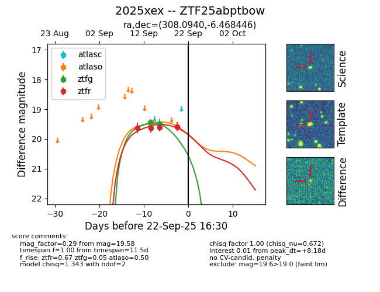
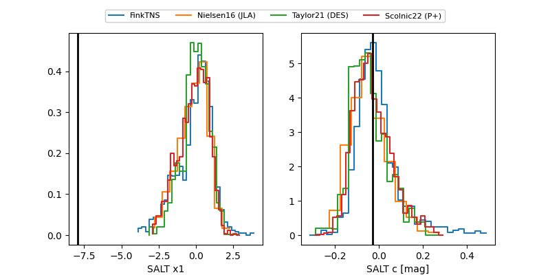

FINK: ZTF25abptbow
Lasair: ZTF25abptbow
ALeRCE: ZTF25abptbow
TNS: 2025xex
YSE: 2025xex
ZTF25abptbow (ztf,fink)
2025xex (tns,yse)
equatorial (ra, dec) = (308.0940,-6.46845)
galactic (l, b) = (38.8328,-25.36464)


last atlaso=19.44, ztfg=19.49, ztfr=19.58
1 atlaso, 2 ztfg, 4 ztfr detections